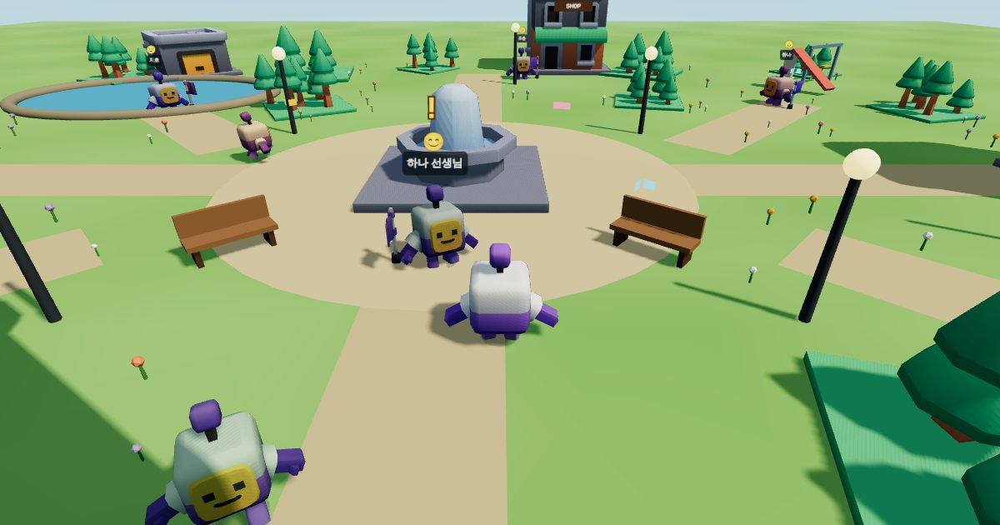
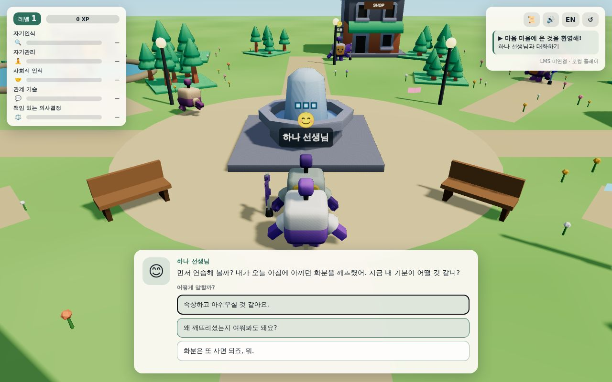
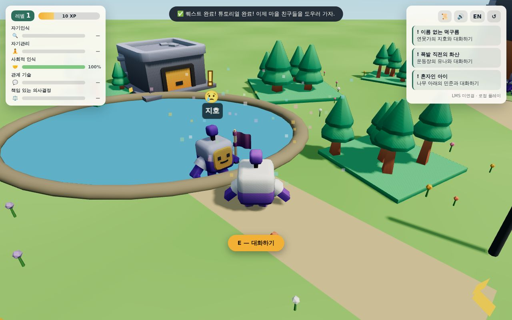
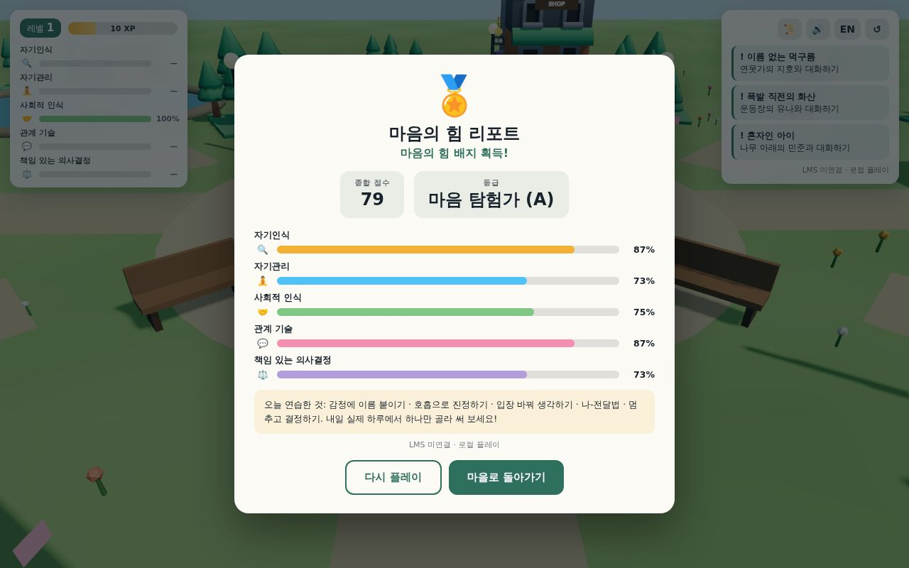

TeachPlay Micro-RPG · SCORM 1.2 · 한국어/English
3D 마을을 자유롭게 탐험하고, 마음이 힘든 친구들의 이야기를 들어 주세요. 대화 속 선택 하나하나가 다섯 가지 '마음의 힘'을 키웁니다.
Maeum Village: SEL Quest 3D — an RPG-style simulator for the five CASEL social-emotional competencies.
CASEL 사회정서학습(SEL) 프레임워크의 5대 역량이 게임 속 성장 스탯이 됩니다.
Learn like you play — real game systems in service of SEL practice.
학교, 공방, 연못, 놀이터가 있는 마을을 3인칭 시점으로 자유롭게 탐험해요. 데스크톱은 키보드+마우스, 모바일은 가상 조이스틱.
정답을 외우는 대신, 실제 또래 상황에서 어떻게 말할지 선택해요. 서툰 선택도 벌점 없이 성찰적인 피드백으로 이어집니다.
선택의 질에 따라 경험치와 레벨이 오르고, 역량별 진행 바와 퀘스트 일지가 나의 성장을 보여 줍니다.
이름을 정하고 옷 색깔을 고르면 대화와 최종 리포트에 내 이름이 새겨져요.
잔잔한 오르골풍 배경 음악과 효과음. 음악·효과음 볼륨을 따로 조절할 수 있어요.
여정이 끝나면 역량별 리포트와 등급이 발급되고, SCORM 1.2로 LMS 성적이 자동 기록됩니다. 한/영 전환 지원.
튜토리얼과 수여식을 포함해 총 7개의 이야기가 준비되어 있습니다.
| 퀘스트 | 친구 | 연습하는 기술 |
|---|---|---|
| 이름 없는 먹구름 | 지호 (연못가) | 감정에 이름 붙이기, 몸의 신호 읽기 |
| 폭발 직전의 화산 | 유나 (운동장) | 화 다스리기 — 멈추기·호흡·식힌 뒤 말하기 |
| 혼자인 아이 | 민준 (큰 나무) | 입장 바꿔 생각하기, 최악 해석 멈추기 |
| 부서진 로봇, 부서진 우정? | 소라 & 태오 (공방) | 차례로 듣기, 나-전달법, 갈등 중재 |
| 주인 잃은 지갑 | 도윤 (가게 앞) | 책임 있는 선택 4단계 |
Screenshots from the live game.


